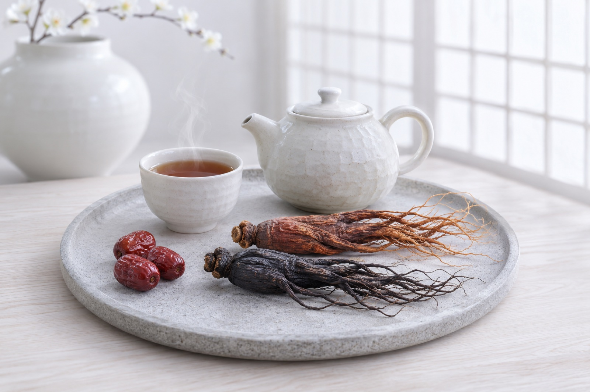

Gut Health
장 건강
하루의 컨디션은 장에서 시작합니다. CJ의 60년 발효기술과 20여 년의 장내 마이크로바이옴 연구를 바탕으로, 유산균과 미생물을 위한 식이섬유를 함께 제안합니다.
Science inside바이오코어 500억 유산균은 국내 상온 최대 보장균수 500억 CFU를 장용성 캡슐에 담았습니다. 맥플랜은 미생물의 영양원인 MAC을 국내 최초로 적용했습니다.
Health
장 건강에서 이너뷰티, 멘탈 웰니스까지 건강한 일상을 설계합니다.
고민마다 어떤 근거가 있고 어떤 브랜드가 있는지 한 번에 보여드립니다.
Gut Health
하루의 컨디션은 장에서 시작합니다. CJ의 60년 발효기술과 20여 년의 장내 마이크로바이옴 연구를 바탕으로, 유산균과 미생물을 위한 식이섬유를 함께 제안합니다.
Science inside바이오코어 500억 유산균은 국내 상온 최대 보장균수 500억 CFU를 장용성 캡슐에 담았습니다. 맥플랜은 미생물의 영양원인 MAC을 국내 최초로 적용했습니다.
Beauty
바르는 것만큼 채우는 것도 중요합니다. 2008년 국내 최초 피부보습 건강기능식품으로 시작한 이너비가 균형 잡힌 이너뷰티 루틴을 전합니다.
Science inside김치 유래 균주 CJLP133은 식품의약품안전처로부터 ‘면역과민반응에 의한 피부 상태 개선에 도움을 줄 수 있음’의 기능성을 인정받은 개별인정형 원료입니다.

Mental
편안한 밤이 내일의 컨디션을 만듭니다. 하루를 정리하는 나이트 루틴과,
선명하고 또렷한 하루를 위한 두뇌 건강 케어를 제안합니다.
Science inside멜라메이트는 국내 최초 식물성 멜라토닌 구미 제형입니다. 메모리메이트는 국내 생산 고순도 포스파티딜세린에 비(非)유기용매 추출 공법을 적용했습니다.

Basic Nutrition
좋은 원료, 합리적 가격으로 꾸준하게. 눈과 관절, 남성 건강부터 성장기 아이까지 온 가족의 기본을 채우는 전문 브랜드입니다.
Science inside전립소의 SHPro®는 농촌진흥청과 국내 연구진이 공동 개발한 전립선 건강 개별인정형 원료입니다. 만 45~75세 남성 84명을 대상으로 12주간 인체적용시험이 진행됐습니다.

K-Wellness
기다림으로 맛을 내는 발효, 정성으로 빚는 보양. 한국인의 일상에 오래 깃든 웰니스의 지혜를 오늘의 루틴으로 다시 설계합니다.
Science inside한뿌리의 구증구포 흑삼은 아홉 번 찌고 말린 흑삼과 저분자 사포닌 기술로 만들며, 2016년 미국 FDA NDI(신규건강식품원료) 승인을 받았습니다.
24-Hour Wellness
웰니스는 특별한 순간에만 찾는 것이 아니라,
아침에 눈을 뜨는 순간부터 깊은 잠에 드는 밤까지 일상 속에 스며드는 것입니다.
Shop
안내건강기능식품은 질병의 예방 및 치료를 위한 의약품이 아닙니다. 제품 정보와 문구는 기존 CJ웰케어 홈페이지 브랜드 소개와 보도자료를 인용했습니다. 루틴 제안은 일반적인 생활 습관 예시입니다.